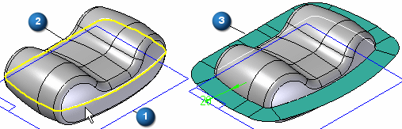

Parting Surface command
Use the Parting Surface command to construct a parting surface along a parting curve you select. You construct a parting surface by selecting a reference plane (1) to define the orientation of the linear cross section curve, and a 2-D or 3-D parting curve (2), which defines the sweep path for the parting surface (3).

You create the parting curve in a separate operation. For example, you can use the Intersection Curve command or the Parting Split command to create the parting curve.